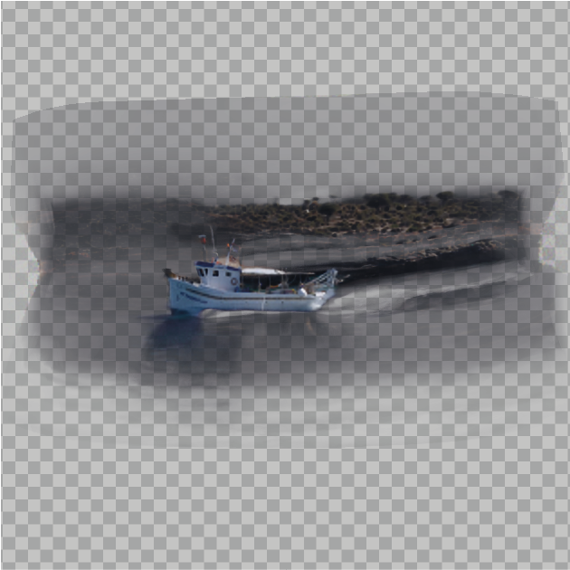

Layered Neural Atlases for Consistent Video Editing
Yoni Kasten Dolev Ofri Oliver Wang Tali Dekel
Supplementary Material
- Video Editing Applications (Figure 6)
- Atlas Editing (Figure 1)
- Giraffe Sequence (from Unwrap Mosaics)
- Reconstruction Results and Atlases (Figure 4)
- Coarse User Masks and Multiple Foreground Objects (Figure 7)
- Video Propagation (Figure 5)
- Architecture Ablation: Grid Atlas (Figure 9)
- Editing a Failure Example (Figure 11)
- Removing Foreground Objects From a Video
- Failure Example
- Editing Demo
We recommend watching all videos in full screen. Click on the images or videos for seeing them in full scale.
Video Editing Applications
Editing examples from Figure 6, showing the edited atlas/frame together with the input video alongside the edited video. Our method can produce a variety of video effects including transferring texture ("Kite-surf" and "Libby"), stylizing the background or the foreground atlases ("Blackswan" and Bicycle"), or transferring a still image into a moving background in a video ("Boat").
{kind=link}
{kind=link}
{kind=link}
{kind=link}
{kind=link}
Atlas Editing
Results corresponding to Figure 1 in the paper. The editing result is done on the foreground and background atlases of "Lucia" video. We show in the first two row the foreground/backgound atlases before and after editing, and in the third row the original video and the edited videos. For the editing part, we show the result in two different settings: working with one foreground layer (middle column, including the atlases in the left column) and working with two foreground layers (right column). Using two layers, the model is able to map the legs to separate layers throughout the video and the quality of edited video improves significantly.
"Lucia"
| Original foreground atlas | Edited one-foreground atlas | Edited two-foreground atlas |
| Original background atlas | Edited background atlas | Edited background atlas |
{kind=link}
{kind=link}
{kind=link}
{kind=link}
{kind=link}
{kind=link}
Giraffe Sequence (from Unwrap Mosaics)
We use the well-know giraffe video also shown in Unwrap Mosaics work [1]. There are no implementations of this method available, however we managed to run our method on this sequence. We downloaded their result from their supplementary video for comparison. We can see that our approach successfully separates the foreground from the background, and models its non-rigid deformations.
"Giraffe"
| Our Foreground atlas | Our Background atlas |
{kind=link}
{kind=link}
Reconstruction Results and Atlases
Results corresponding to Figure 4 in the paper. We present here the foreground atlas image, background atlas image, input video, the texture mapped overlay, the reconstructed video, and the RGBA foreground layer; the RGBA layer is produced by multiplying our model's predicted alpha by the original frames. As can be seen, our model successfully manages to decompose the videos and produce a foreground and background atlases which can be used later for editing.
"Motorbike"
| Foreground atlas | Background atlas |
{kind=link}
{kind=link}
"Libby"
| Foreground atlas | Background atlas |
{kind=link}
{kind=link}
"Boat"
 |
|
| Foreground atlas | Background atlas |
{kind=link}
"Car-turn"
| Foreground atlas | Background atlas |
{kind=link}
{kind=link}
"Kite-surf"
| Foreground atlas | Background atlas |
{kind=link}
{kind=link}
Coarse User Masks and Multiple Foreground Objects
Results corresponding to Figure 7 in the paper. Coarse masks are provided by the user and are used as an initialization for the layers decomposition, having a separate foreground layer for each of the gliders. We present (a) the input video, (b) the input coarse masks for each of the gliders provided by the user, (c) the reconstructed video, and (d) the output alphas after training multiplied by the frames. As can be seen, our model manages to refine the decomposition of the layers.
"Parachuting"
Video Propagation
Results corresponding to Figure 5. Coparison to a flow baseline and Videowalk [2] for the task of video propagation. The input is a edited frame, where the edit consists of horizonal colored stripes on the first frame of the input video. Our method is able to produce better results in terms of temporal consistency. See more details in the paper.
| Input edited frame | Video propagation output given by flow baseline (left) Videowalk (middle) and our model (right) |
{kind=link}
{kind=link}
{kind=link}
Architecture Ablation: Grid Atlas
Results corresponding to Figure 9. We ablate the choice of using an MLP for representing the atlases vs traditional image-based representations. In this experiment, we replace our atlas MLP with a fixed resolution (1000x1000) texture image, and optimized it directly with the rest of our components (mapping and alpha networks) using the same objective (we call this "Grid Atlas"). We note that the Grid Atlas baseline fails to decompose the foreground and background, i.e. the mapping is inconsistent and distorted, and thus these region of the video is not editable.
"Boat"
|  |  |
| Foreground atlas | Background atlas |
{kind=link}
"Libby"
| Foreground atlas | Background atlas |
{kind=link}
{kind=link}
Editing a Failure Example
Results corresponding to Figure 11 in the paper. Our method was not able to accurately represent the person - the foreground atlas is distorted and missing limbs. However, the background reconstruction is reasonable and supports edits. We present (a) the foreground atlas, (b) the background atlas, (c) the edited background atlas, (d) the input video, (e) the alpha predicted by our method, and (f) the video with the edited background.
"Parkour"
| Foreground atlas | Background atlas | Edited background altas |
{kind=link}
{kind=link}
{kind=link}
Removing Foreground Objects From a Video
Our approach can be used to remove foreground elements (i.e. to generate a “clean plate“) by setting α=0 (Eq.(4) in paper). This tends to work under the following assumptions: (1) the motion of the background behind the foreground element is smooth, (2) the unseen regions at a given frame are visible at least one other frame of the video.
"Car-turn"
"Motorbike"
Failure Example
Another example of a failure case. In this video there is a lot of parallax due to the boulders and the camera movement. In addition, it contains a highly complex movement due to the goat's fur moving in the strong wind. Our method was not able to accurately represent the goat - the foreground atlas is missing legs and the separate hairs were not mapped correctly. The background atlas is smeared due to the parallax and the goat's loose fur. We present (a) the foreground atlas, (b) the background atlas, (c) the input video, (d) the alpha predicted by our method, and (e) the reconstructed video.
"Goat"
| Foreground atlas | Background atlas |
{kind=link}
{kind=link}
Editing Demo
An example of how the editing is being done (2x speed).
"Parkour"
References
[1] Alex Rav-Acha, Pushmeet Kohli, Carsten Rother, and Andrew Fitzgibbon. 2008. Unwrapmosaics: A new representation for video editing. InACM SIGGRAPH 2008 papers.
[2] Allan Jabri, Andrew Owens, and Alexei A Efros. 2020. Space-time correspondence as acontrastive random walk. arXiv preprint arXiv:2006.14613 (2020).